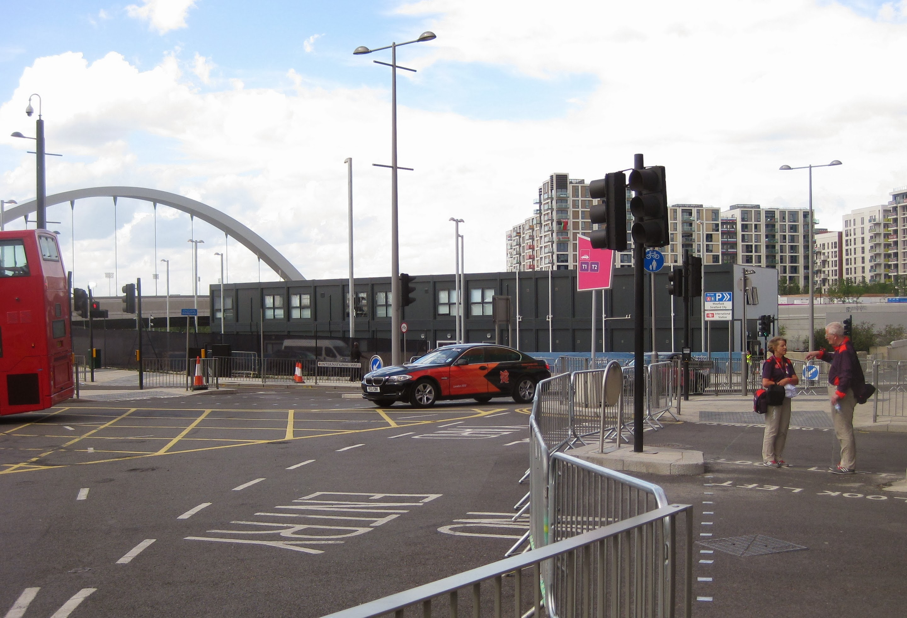

Role Specific Training - FDO Fleet Depot Olympic Park
Saturday 5th May 2012
I decided to check out the Fleet Depot location the evening before, so made my way direct from Laing's to
Stratford (Victoria to Oxford Circus then Central Line on Tube). When I asked the Olympic Park staff with the foam hands where the Olympic
Park Fleet Depot was no-one had any idea. After an hour of walking around the Westfield Shopping Centre, I finally found a concierge on the
first floor of the Mall who could direct me to where it was. When I arrived at the depot, which was a two storey portacabin construction, they
confirmed that neither the address nor the post code exist in Google Maps. Just as well I did a recce. I'd have been really late if I'd left
it until Saturday morning. They claimed there would be loads of people around on Saturday morning to help with directions but they were
conspicuous by their absence.

Having left the hotel at 6.00am and eating my bacon roll on the tube, I arrived at the depot in good time. I had to show my driving licence
and then fill out a form to say no details had changed since they'd last checked ie traffic convictions or health stuff. I was then given a
sticky name badge which had a colour assigned to it. My heart sank at the thought of crappy team building exercises to come. Once checked in I
decided to forgo the tea/coffee due to the limited toilet facilities and large numbers of people. We didn't start until 8.10am as lots of
people were having difficulty in finding the depot.
First up was a reprise of the main Wembley stuff; I DO ACT, HOT, Safe, Secure, Sustainable. Then we did a tiny bit of BSL and the stupid
diversity/inclusivity questions which were treated with the contempt they deserved from all concerned.
Next up was the more interesting stuff eg how the Fleet Services was going to work. Finally found out what a T3 driver is. T1 drivers are
basically PA/Chauffeurs - 10 hour shifts one on one with big wigs. T2 drivers are the same but shared between 2/3 people. T3 drivers are the
rest of the executive chauffeurs. There is an on demand service at busy locations, and a 4 hour notice Request for Transport (RFT) for non
busy locations. The colours on our name tags then came into play as they split us into 5 groups to have 5 30 minute sessions with a whistle
blown to tell you to move to the next one. The sessions were Driver Protocol, Radio Operation, Depot Operation, Vehicle Familiarisation and
Sat Nav Operation.
Driver Protocol was mostly Do's and Don'ts. Do make sure everyone is wearing a seat belt. Don't let anyone smoke. You are responsible for
parking and speeding tickets. Call customers Sir or Ma'am. Help with bags if you can but it's not actually our job. Radio Operation is a legal
requirement as LOGOC has a paid for licence. Covered switching radio on, changing channels plus language protocols. ie Control, Control,
Charlie 234 over. No butting in conversations until you hear out. Depot Familiarisation took us into the Ops portacabin to see where the radio
controllers, depatchers and schedulers hang out. It is mostly computerised but there are white boards as back up.
Vehicle familiarisation was a bit of a waste of time. Lights, indicators and Parking Pilot and you know a BMW. The time spent on the ordinary
SatNav was useful. The actual SatNav training was on DORS (Dynamic Olympic Route System). It has all the T3 destinations programmed into it.
It was a little complicated and still changing. The lass teaching us told us it had changed only the day before. The last bit before lunch was
the Defensive driving thing. The Brummie presenter was a bit of a tit but the videos were quite good and thought provoking. Sandwiches, fruit,
biscuits and a bottle of water was lunch and then we started to queue up to go out to drive.
Ended up in a saloon car with a sixty something ex-police officer (Lesley) who hadn't driven a manual for almost 20 years and an Asian guy.
The driving expert drove first as we headed for Eton Manor Transport Hub. There was a London Prepares event on at the park and a bridge was
out of commission and so the traffic was horrendous. There were loads of calls on the radio saying it was not possible to reach Eton Manor
requesting another destination. Control was adamant we should keep going. We ended up going off the ORN by some way to get there. A 15 minute
journey had taken 75 minutes. Control radiod us to see where we were as we pulled into the giant car park that is the T3 Olympic Transport Hub.
The Asian guy was driving first. He had been at the training the day before but felt sick before it was his turn to drive so was back for more.
That should have given us a warning. He stalled twice in the car park and three more times at the lights at the exit. The Sat Nav was on silent,
so he had to stare at the screen to see where we were going (which was the North Greenwich Arena ie the O2). The expert had to tell him to get
into 4th gear and once in it he was determined not to change down ever again. We also weren't going to change lanes unless absolutely necessary,
o had to slam on the brakes to let someone out onto the A12. Sighs of relief from all concerned when we arrived.
I was up next. I switched the SatNav sound on, switched the view to perspective, called Control to get next destination and programmed in
Royal Artillery Barracks. We got there OK despite me not knowing where the hell I was. The expert was really happy with me but told me not to
coast in corners. Lesley was up next as we headed to Greenwich Park. She did well having not used a manual for so long. If we had been given
another destination Lesley was going to continue. Instead we were called back to Eton Manor so I was in the driving seat. The traffic was just
as bad on the way back. The expert completed his paperwork and talked to the Asian guy who decided he needed more driving practice!! I then
drove us back to the depot.